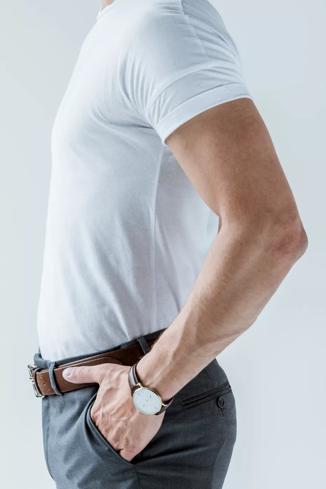

Workshop | September 28,2023
How to Make DIY Leather Notebook Cover
Over the last years, we've made thousands of notebook covers of all colors and shapes. Today, however, we won't be making any, because it's your turn to try yourself in leather craftsmanship with our help and advice...
Read more

Tips & Tricks | September 22, 2023
Caring for Leather Handbags: 10 Tips
Now, when you've become a proud owner of a new beautiful leather handbag, the important thing is to make sure that it will serve you for ages and retain its beauty. Even with meticulous care, leather will still age, but...
Read more
Workshop | September 15, 2023